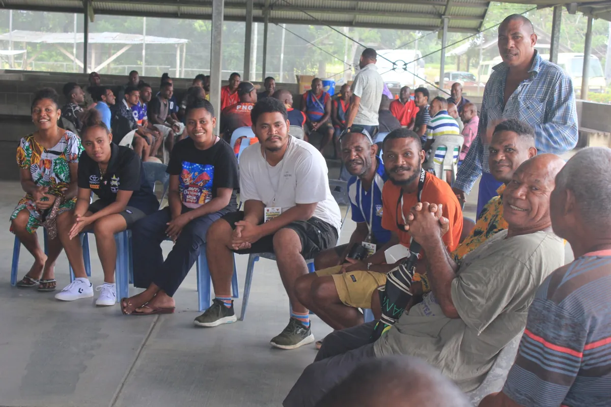

Village outreach & crusades
Taking the Gospel into communities and creating opportunities for prayer, fellowship and spiritual encouragement.
Explore crusades and outreachOur community project
A place to rebuild lives, restore hope and develop purpose.
Planned for Baruni Village, Port Moresby, the Centre is intended to support people facing substance misuse, gambling, family breakdown, violence and the challenges of reintegration after incarceration.
The vision brings together rehabilitation and counselling, practical skills, leadership development and community partnership. These are proposed services for the Centre.
Support the Project Discuss a partnershipOur work today
Taking the Gospel into communities and creating opportunities for prayer, fellowship and spiritual encouragement.
Explore crusades and outreach
Fellowship, encouragement and practical connection are part of our outreach, including visits to Bomana Correctional Institution’s Minimum Security Unit.
Read about the Bomana visits